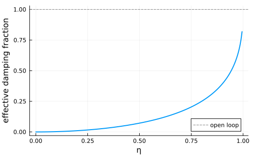

Coherent-Feedback Squeezing with a Beam-Splitter Loop
This example implements the feedback loop to enhance field squeezing using coherent feedback described in J. Gough and S. Wildfeuer, PRA 80, 042107 (2009), see also Example VI.1 of J. Combes, et al. Advances in Physics: X, 2:3, 784-888 (2017). A degenerate parametric oscillator is concatenated with a beam splitter, and the internal wires are eliminated with the SLH feedback reduction rule.
using QuantumInputOutputusing SecondQuantizedAlgebrausing SymbolicUtilsusing Plots# symbolic Hilbert spacehc = FockSpace(:c)# symbolic operatora = Destroy(hc, :a)# symbolic parameters@variables κ::Real ϵ::Real η::RealThe open-loop OPO has one port, while the beam splitter has two ports. We first form the unconnected network and then apply the two feedback reductions.
r = √(1 - η^2)G_opo = SLH(1, √(κ) * a, 1im * ϵ * (a'^2 - a^2))G_bs = SLH([-r η; η r], [0, 0], 0)G_unconnected = G_opo ⊞ G_bsG_loop = feedback(G_unconnected, 1 => 2, 2 => 1)S_loop = scattering(G_loop)L_loop = jump_operator(G_loop)[1]((-sqrt(1 - (η^2))*η*(κ^(1//2))) / ((1.0 + 0.0im) + sqrt(1 - (η^2))) + η*(κ^(1//2))) * aH_loop = hamiltonian(G_loop)(-ϵ)im * a * a + (0.0 - 0.5im)*((sqrt(1 - (η^2))*((1 - (η^2))*(κ^(1//2)) + (η^2)*(κ^(1//2)))*(κ^(1//2))) / ((1.0 - 0.0im) + sqrt(1 - (η^2))) + (-sqrt(1 - (η^2))*((1 - (η^2))*(κ^(1//2)) + (η^2)*(κ^(1//2)))*(κ^(1//2))) / ((1.0 + 0.0im) + sqrt(1 - (η^2)))) * a' * a + ϵim * a' * a'The feedback loop leaves the OPO Hamiltonian unchanged but rescales the coupling operator by $l = \eta / (1 + \sqrt{1-\eta^2})$. For a numerical illustration, we evaluate the effective damping factor $l^2$ as a function of the beam-splitter transmission coefficient.
η_grid = collect(0.0:0.005:0.999)l2_grid = @. (η_grid / (1 + sqrt(1 - η_grid^2)))^2p = plot( η_grid, l2_grid; lw = 2, label = "", xlabel = "η", ylabel = "effective damping fraction", grid = true, size = (520, 320),)hline!(p, [1.0]; color = :grey, ls = :dash, label = "open loop")p
Package versions
These results were obtained using the following versions:
using InteractiveUtilsversioninfo()using PkgPkg.status( ["QuantumInputOutput", "SecondQuantizedAlgebra", "Plots"], mode = PKGMODE_MANIFEST,)Julia Version 1.12.7
Commit 6d172b025e4 (2026-08-15 08:05 UTC)
Build Info:
Official https://julialang.org release
Platform Info:
OS: Linux (x86_64-linux-gnu)
CPU: 4 × INTEL(R) XEON(R) PLATINUM 8573C
WORD_SIZE: 64
LLVM: libLLVM-18.1.7 (ORCJIT, sapphirerapids)
GC: Built with stock GC
Threads: 1 default, 0 interactive, 1 GC (on 4 virtual cores)
Environment:
JULIA_PKG_SERVER_REGISTRY_PREFERENCE = eager
JULIA_DEBUG = Documenter,Literate
JULIA_NUM_THREADS = 1
Status `~/work/QuantumInputOutput.jl/QuantumInputOutput.jl/docs/Manifest.toml`
[91a5bcdd] Plots v1.41.7
[18f9eda6] QuantumInputOutput v0.5.3 `~/work/QuantumInputOutput.jl/QuantumInputOutput.jl`
[f7aa4685] SecondQuantizedAlgebra v0.11.0
This page was generated using Literate.jl.